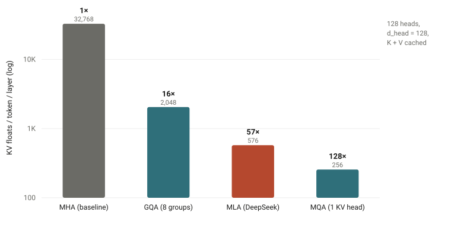

The path to 1M context window
Table of Contents
Every step on the staircase below is a model reading further than any before it — 2,048 tokens in 2020, a million by early 2024, ten million now. None of the steps came free: each was paid for somewhere deep in the stack.
Positional Encoding: RoPE for Local Order, NoPE for Long-Range Reach
Almost every model today encodes position with RoPE, rotary position embedding (Su et al., 2021). Rather than add a position vector to each token, RoPE rotates every query and key by an angle proportional to its position, so that the attention score between two tokens depends only on how far apart they are — relative position, not absolute. It is parameter-free and, since LLaMA adopted it, effectively universal — Mistral, Qwen, DeepSeek, and Gemma all use it.
RoPE has two properties, though, that are helpful up close and become liabilities at range. The first is a built-in long-term decay: the rotation makes the query–key score fall off as two tokens move farther apart — exactly what you want for local word order, and exactly what you do not want when the useful information sits a million tokens back. The second is that RoPE's rotation frequencies are effectively calibrated to the training length; feed it positions far beyond what it saw in training and those angles are out of distribution, so attention degrades. RoPE is both anchored to where it trained and biased toward the neighborhood — the two things that hurt most at a million tokens.

You can stretch RoPE's range with a brief continued-pretraining pass — Position Interpolation (Chen et al., 2023) and YaRN (Peng et al., 2023) are the standard tricks, and they are what carry most models to 128K and beyond — but they only push the training-length anchor outward; they do nothing about the decay. A RoPE model stretched to a million tokens still struggles to attend uniformly across them.
The newest idea fixes both at once, and it is almost embarrassingly simple: on a fraction of the layers, use no positional encoding at all (NoPE) and let them read order from the causal mask alone (Kazemnejad et al., 2023; Yang et al., 2025). A NoPE layer has no rotation, so it has neither problem — no distance decay, so it can attend across the whole sequence, and no training-length anchor, so nothing goes out of distribution as the context grows. The recipe is to keep RoPE on most layers for sharp local order and let the position-free layers do the long-range reaching.
This is what the longest-context models actually do. Meta's Llama 4 (2025) calls it iRoPE: roughly three RoPE layers for every one NoPE layer, plus an inference-time attention-temperature scaling, trained at 256K and generalizing to 10M tokens. Hugging Face's fully-open SmolLM3 (2025) uses the same recipe — RoPE on three-quarters of its layers, NoPE on every fourth. Because SmolLM3 publishes its weights and its training recipe, it is the clearest public confirmation of the pattern; the proprietary 1M models (Gemini, GPT-4.1, Claude) do not disclose their positional scheme but are widely assumed to do something similar. The modern answer to "how do you encode position for a million tokens?" is to keep it where it helps and drop it where it hurts. Keep that shape in mind — a minority of layers doing the long-range work — because attention is about to repeat it.
Attention, Rebuilt: Full Attention Becomes a Minority Layer
Attention is where long context gets expensive, twice over. Compute grows with the square of the sequence length, O(N²), because every token attends to every other (Vaswani et al., 2017). And the KV cache — the keys and values a model keeps for every past token so it never has to recompute them — grows linearly, with a large constant: a 70B model like Llama 3 (Dubey et al., 2024) holds roughly 40 GB of cache at 128K tokens, on top of its ~140 GB of weights. For years the story here was conservative: keep attention exactly as it is, just compute it smarter and cache it smaller. That era built the tools everything still runs on. But the 2025–26 generation went further, and the field's question changed shape. It is no longer "how do we make every layer cheaper?" It is: what fraction of layers keep full attention, and what cheap primitive fills the rest? By mid-2026, no major open-weight model reaches 1M tokens with dense attention in every layer. This section walks the levers in order of increasing radicalism — cache less, compute smarter, attend sparsely, replace the layer — and ends with how they get composed.
Cache Less: MHA → MQA → GQA → MLA
The KV cache's size is a per-token cost multiplied by the length of the context. The length is the whole point, so the only lever left is what each token costs — and the history of attention heads is largely a history of pulling that lever, by giving fewer heads their own keys and values.
- Multi-Head Attention (MHA) — the GPT-3 baseline, in which every head caches its own K and V.
- Multi-Query Attention (MQA) — all query heads share a single K/V head (Shazeer, 2019). With 128 heads that is a 128× smaller cache, at some cost in quality.
- Grouped-Query Attention (GQA) — the pragmatic middle ground (Ainslie et al., 2023): split the heads into G groups that each share one K/V pair. With 8 groups you get an 8–16× reduction while keeping almost all of MHA's quality. Llama 2/3, Mistral, and most open models use it.
- Multi-head Latent Attention (MLA) — DeepSeek's approach (DeepSeek-V2, 2024): rather than use fewer heads, compress K and V into a low-rank latent vector (plus a small decoupled RoPE component) and cache only that. DeepSeek reported a 93.3% reduction in KV-cache size and 5.76× higher throughput.

Compute Smarter: FlashAttention Makes Exact Attention Survivable
On the compute side, the anchor is FlashAttention (Dao et al., 2022), the single most important piece of plumbing here. It computes exact attention without ever writing the N×N matrix to high-bandwidth memory: it tiles Q, K, and V into SRAM-sized blocks and keeps a running softmax. The activation memory drops from O(N²) to O(N), and HBM traffic falls by roughly 9× in practice — the often-quoted "O(N²)→O(N)" is a simplification; the precise bound is O(N²d²/M). FlashAttention-2 (Dao, 2023) and FlashAttention-3 (Shah et al., 2024) then pushed hardware utilization from roughly 25% to about 70% on A100 and 75% on H100, and almost every model since 2023 trains on this kernel. But FlashAttention is an IO fix, not an algorithmic one — the quadratic is still there, just fed efficiently. At a million tokens you eventually have to attack the exponent.
Attend Sparsely: From Fixed Patterns to Trained Sparsity
The first generation of sparse attention hand-designed the pattern. Sparse Transformers (Child et al., 2019) cut O(N²) to O(N√N); Longformer (Beltagy et al., 2020) and BigBird (Zaheer et al., 2020) used a sliding window plus a few global tokens to reach O(N); Mistral 7B (Jiang et al., 2023) shipped sliding-window attention as a headline feature. StreamingLLM (Xiao et al., 2023) made a lovely observation — models dump excess attention onto the first few "sink" tokens, so keeping just those sinks plus a recent window lets a model generate indefinitely at fixed memory.
The second generation lets the model learn where to attend, and it arrived as a two-lab movement in the same month: DeepSeek's Native Sparse Attention (NSA, February 2025) combines compressed, selected, and local-window paths trained end-to-end, for roughly 11× faster decoding at 64K; Moonshot's Mixture of Block Attention (MoBA, February 2025) routes queries to blocks of context MoE-style and went straight into production behind Kimi. The decisive moment came that September, when DeepSeek Sparse Attention (DSA) shipped in DeepSeek-V3.2-Exp: a lightning indexer picks top-k tokens per query under MLA, quality held at parity with the dense V3.1 — and DeepSeek cut long-context API prices by more than half the same day. That price cut is the tell: sparse attention stopped being a research demo and became an economic fact. By early 2026 GLM-5 had adopted DSA directly, and the mechanism scaled to the flagship tier — DeepSeek-V4 (2026) reaches 1M tokens on a hybrid of compressed-sparse and compressed-dense attention at roughly 27% of the FLOPs and 10% of the KV cache of its predecessor.
Replace the Layer: Linear Attention and the SSM Lineage
The most radical lever drops softmax attention entirely. State-space models compress the entire past into a fixed-size state — O(N) time, O(1) inference memory, in effect a recurrent network that still trains in parallel. The line runs from S4 (Gu et al., 2021) through Mamba (Gu & Dao, 2023), whose selective mechanism lets the state decide what to keep, to Mamba-2's formal duality with attention (Dao & Gu, 2024). The catch, found early and confirmed often: pure SSMs are weaker at precise recall — looking up an exact token far back, where attention stays near 100%. So the survivors are hybrids — Jamba (Lieber et al., 2024) interleaved one attention layer per seven Mamba layers and fit a 256K context in 4 GB of KV cache where a comparable Transformer needs 32 GB; Samba (Ren et al., 2024) paired Mamba with sliding windows. Attention for exact retrieval, the cheap layer for everything else.
What was a research pattern in 2024 became the production default in 2025. MiniMax-01 (January 2025) was the first frontier-scale proof: a 456B MoE with lightning attention in most layers, trained at 1M context and serving 4M. Gemma 3 (March 2025) applied the same logic inside a "vanilla" transformer — five sliding-window layers per global layer, windows of just 1,024 tokens, explicitly to tame the KV cache. Qwen3-Next (September 2025) put Gated DeltaNet, a linear attention, in three of every four layers for ~10× faster long-context inference, a design that became the default for Qwen3.5's flagship in early 2026. Kimi Linear (Moonshot, October 2025) pushed the claim furthest: a 3:1 hybrid of Kimi Delta Attention and MLA that Moonshot reports beating full attention under matched comparisons — including through RL post-training — with a 75% smaller KV cache and ~6× faster decoding at 1M. NVIDIA's Nemotron line and IBM's Granite 4 run the same play with Mamba-2 layers, some with as little as ~8% of layers doing full attention.
The Composition Question — and the Holdout That Converted
Notice that "sparse" and "linear" ended in the same place: a minority of full-attention layers doing precise recall, with something cheap — a sliding window, a learned sparse pattern, a recurrent state — filling the rest. The design question every lab now answers is the ratio and the primitive, the same shape as iRoPE's three-RoPE-to-one-NoPE. It would be dishonest to present this as uncontested: MiniMax itself published the field's best counterargument ("Why did M2 end up a full-attention model?", October 2025), reporting that its hybrids fell short on multi-hop reasoning at scale and that production infrastructure — numerical precision, prefix caching, speculative decoding — wasn't ready. The essay aged into the strongest evidence for the trend: seven months later MiniMax shipped M3 at 1M context on its own block-sparse mechanism (MSA, June 2026), citing ~9.7× faster prefill and ~15.6× faster decoding than M2. Full attention in every layer still has defenders on reasoning quality — but at 1M tokens, nobody is paying for it anymore.
Shard the Sequence: A Million Tokens Doesn't Fit on One GPU
However cheap each layer gets, a million-token sequence still doesn't fit on one device, so the sequence itself gets sharded. Context parallelism splits the tokens across GPUs — Llama 3 used a context-parallel degree of 16, each rank handling an 8K slice of a 128K sequence. The elegant version is Ring Attention (Liu et al., 2023), which streams KV blocks around a ring of devices while overlapping communication with computation, scaling context linearly with device count; together with sequence-parallel activation sharding (Korthikanti et al., 2022), it is the lineage behind Gemini 1.5's million-token training (Gemini Team, 2024). On the serving side, PagedAttention (Kwon et al., 2023) borrowed virtual-memory paging to cut KV waste from 60–80% to under 4% — and has since grown into KV-centric serving systems: Mooncake (Qin et al., FAST'25 best paper) disaggregates prefill from decode and pools the cache across DRAM and SSD to serve Kimi at 100B+ tokens a day. Serving cost is now a first-class design input — DSA's API price cut made that explicit — but the systems story is a post of its own.
Capability Isn’t Enough: You Have to Train on Long Sequences
None of the machinery above matters if a model only ever trains on short sequences. But training everything at 128K would be absurdly expensive — that quadratic cost again — so the industry converged on a multi-stage curriculum: do the vast bulk of pretraining at a short length, where attention is cheap, and follow it with a short, carefully data-engineered long-context phase.
Llama 3 (Dubey et al., 2024) is the canonical example. It trained on roughly 15T tokens at 8K, then added about 800B tokens ramping through six stages from 8K to 128K, with the RoPE base raised to 500,000. Each stage advanced only once two criteria were met: short-context benchmarks had recovered, and needle-in-a-haystack recall had reached nearly 100% at the new length. DeepSeek-V3 (2024) did much the same with two 1,000-step YaRN phases (4K → 32K → 128K) on top of 14.8T tokens of 4K pretraining, buying 128K of context for the cost of 2,000 extra steps.
The data details turned out to matter as much as the length:
- Document packing with intra-document masking — pack many short documents into one long training sequence for efficiency, but mask attention so that each token only sees its own document.
- Long-data upsampling — code repositories and books carry genuine long-range dependencies. Princeton's ProLong (Gao et al., 2024) showed that the right data mix, trained on just 40B tokens, beat Llama-3.1-8B-Instruct's roughly 800B-token long-context training on the HELMET benchmark.
- Synthetic long-range tasks — fill-in-the-middle, key and passage retrieval, and paragraph reordering inject the long-distance structure that natural text often lacks, a recipe used in Qwen2.5-1M (Qwen Team, 2025).
One caveat to carry forward: those stage gates measure retrieval — find the planted fact, recite it back. As the evaluation section will show, retrieval turned out to be the easy part, and passing a needle test is now the entry ticket, not the proof.
The Optimizer: Keeping a Bolt-On Second Training Run Alive
A long-context phase is, in effect, a second training run bolted onto a finished, expensive model — and longer sequences make training more fragile, where a single loss spike partway through can corrupt the investment. Most of the stability toolkit is general-purpose background by now (Pre-LN placement and AdamW (Loshchilov & Hutter, 2017) are near-universal; newer optimizers like Muon, adopted as MuonClip in Kimi K2, 2025, chase raw efficiency). Three pieces matter specifically because the sequences are long and the phase is bolted on:
- Warmup-Stable-Decay schedules — the GPT-3-era linear-warmup-plus-cosine schedule fixed the training horizon in advance; WSD (Hu et al., 2024) is "horizon-free": you can trigger the decay at any point, which is exactly what bolting a long-context phase onto a finished base model requires. A cosine-scheduled model has already spent its schedule.
- z-loss and QK-norm — a small penalty on the softmax normalizer (z-loss) and normalizing queries and keys before attention (QK-norm) both head off logit explosion. QK-norm matters more at long context, where one collapsed attention distribution loses information across the whole sequence.
- muP — a parametrization (Yang et al., 2022) that keeps optimal hyperparameters stable as the model scales, so a multi-stage context-extension curriculum doesn't need re-tuning at every stage.
Post-Training: The Window Is Pretrained; Using It Is Reinforced
There is an old clue in this story that nothing above can explain. Anthropic found that Claude 2.1 scored just 27% on needle retrieval — until a single added line in the prompt raised it to 98%. The capacity was there; the behavior wasn't. Long-context ability isn't only built in pretraining — it can be suppressed, or unlocked, by what happens after. Through 2025 the field stopped treating that as a curiosity and started training the behavior in deliberately, and this became the fastest-moving pillar of the five.
The direct line is reinforcement learning on long-context reasoning. QwenLong-L1 (May 2025) formalized it — RL with progressively scaled context lengths — and its 32B model matched Claude-3.7-Sonnet-Thinking on long-document QA. At the frontier this is already routine practice: MiniMax-M1 (June 2025), whose lightning-attention backbone natively supports a 1M-token context, was trained with large-scale RL.
The stranger and more interesting line treats memory itself as a trainable behavior. MemAgent (July 2025) used RL to teach a model with an 8K window to maintain a rolling token memory — and it then answered questions over 3.5M-token documents with under 5% degradation, reaching far past its architectural window. Memory-as-Action (October 2025) goes further and puts editing one's own context directly into the action space, so context curation is itself a learned policy. QwenLong-L1.5 (December 2025) fused the two threads — long-context RL plus a memory-agent framework in one post-training recipe — and reports long-context reasoning at 1M–4M tokens competitive with the strongest closed models. By mid-2026 the motivation is stated outright: long-context skill is the bottleneck on long-horizon agent benchmarks, and it is attacked with curated RL data (Beyond Reward Engineering, 2026).
The division of labor across the pillars is now clean: architecture gives the model a window it can afford, the pretraining curriculum gives it the representation of length, and post-training decides whether it actually works the window. Which raises the obvious question — how would you tell?
Evaluation: The Needle Saturated — Effective Context Is the Real Spec
Long-context evaluation began as an honesty check. "Lost in the Middle" (Liu et al., 2023) showed a U-shaped curve — models reliably use information at the start and end of the context and miss the middle, dropping about 20 points on multi-document QA — and Needle-in-a-Haystack made the probe standard: plant a fact, ask for it back. The benchmarks promptly became training targets; as we saw, Llama 3 gated each context-extension stage on near-perfect needle recall.
Then the needle stopped discriminating. Gemini 1.5 reported better than 99.7% recall at 1M tokens (Gemini Team, 2024); GPT-4.1 reported 100% to 1M. The tell is what OpenAI shipped alongside that claim: two harder in-house evals, OpenAI-MRCR and Graphwalks (April 2025) — because the same model that never misses one needle scored only ~57% when asked to distinguish two of them at 128K. When a lab's own release notes retire a benchmark, it's saturated.
What replaced it is the concept this section is really about: effective context — the length at which a model still works, as opposed to the length it accepts. RULER (Hsieh et al., 2024) measured the gap first with controlled synthetic tasks: models claiming 128K or 1M windows routinely hold their short-context quality only to 32K or 64K. NoLiMa (Modarressi et al., ICML 2025) made the test unriggable by removing lexical overlap between question and needle — forcing actual semantic bridging — and most models claiming 128K+ fell below half their short-context baseline by 32K. Chroma's Context Rot report (July 2025) showed 18 frontier models, 1M-class included, degrading non-uniformly with input length even on trivially simple tasks. And the cleanest result of all (Du et al., 2025): performance drops as inputs grow even when the extra tokens are irrelevant padding and retrieval is verified perfect. Retrieval is solved; reasoning at length is not.
So evaluation graduated from gating training stages to defining what "1M context" even means. LongBench v2 (Bai et al., 2024) tests deep reasoning over contexts up to 2M words, where the best model answering directly scored only ~50% at release; agentic long-context benchmarks arrived in 2026 to test dynamic synthesis over tool outputs rather than static retrieval. The flagship comparisons now happen on MRCR-class scores at 1M, where the spread between models is wide and the numbers are nowhere near saturated. Read a spec sheet accordingly: the advertised window tells you what the model accepts; only the effective-context evals tell you what it can do there.
The Modern 1M Recipe, Assembled
Put it all together and a 2026-era long-context model looks roughly like this:
| Layer | GPT-3 (2020) | 1M-context model (2025–26) |
|---|---|---|
| Positional encoding | Learned absolute (cap 2,048) | RoPE + YaRN/LongRoPE, or iRoPE+NoPE |
| Attention heads | Full MHA | GQA or MLA (+ KV quantization) |
| Attention algorithm | Dense O(N²) | FlashAttention-3; trainable sparsity (NSA → DSA, MSA) |
| Attention composition | Every layer full attention | 1 full-attention layer per 3–12 sparse / linear / sliding-window layers |
| Architecture | Dense Transformer | MoE, often SSM/linear hybrids |
| Pretraining | Single length, 2K | Multi-stage curriculum to 128K–256K + synthetic data |
| Post-training | — (base model) | Long-context RL + learned memory (QwenLong-L1.5, MemAgent) |
| Systems | Data parallel | + Context parallel / ring attention, paged & disaggregated KV serving |
| Optimizer | Adam + cosine | AdamW/Muon + WSD, z-loss, QK-norm, muP |
| Evaluation | Perplexity | Effective-context evals (MRCR, NoLiMa, RULER); NIAH as entry ticket |
No single breakthrough took us from 2K to a million. RoPE removed the hard ceiling; FlashAttention made the quadratic survivable; GQA and MLA shrank the cache; trained sparsity and linear hybrids made full attention a minority layer; the curriculum taught models the length; RL taught them to use it; and ring attention spread it across the cluster. The "1M context window" on a spec sheet is the visible tip of half a decade of work spread across the entire stack. Which leaves the question the spec sheet can't answer: what is all of this for?
What a Million Tokens Buys: Long-Horizon Work
The answer, mostly, is agents. For a model answering one question, context is a retrieval feature. For an agent, context is working memory: every file it reads, every tool result, every intermediate decision either lives in the window or is gone. Anthropic's engineering guidance (2025) calls context a finite "attention budget" that every token of a session spends down — which makes the window size a direct bound on how much state an agent can carry through a task, and long horizons the reason all of the machinery above exists. The labs frame it exactly this way: Anthropic's 1M announcement (August 2025) leads not with book-length documents but with 75,000-line codebases and agents that "maintain coherence across hundreds of tool calls." The purest demonstration of raw window value is many-shot in-context learning (Agarwal et al., 2024): with hundreds to thousands of examples in context, in-context learning starts to rival fine-tuning.
And the demand curve is measurable. METR's time-horizon studies (Kwa et al., 2025) find that the length of task an agent can complete at 50% reliability has doubled roughly every seven months for six years — faster on recent models — with the best agents now handling tasks that take humans on the order of five hours. Longer tasks are harsher on state: success decays roughly exponentially with task length, as if each step carries a constant hazard of fatal error (Ord, 2025). That compounding is why the evaluation section is the one that matters most here. An agent's constraints sit in the middle of its window — the requirement stated four hundred tool calls ago — and a model that silently drops a mid-context fact doesn't get one answer wrong, it corrupts every action downstream. For agents, effective context isn't a benchmark nuance; it is the spec.
Two honest caveats complete the picture. First, economics: an agent re-sends a nearly identical million-token prefix every turn, and that is affordable only because prefix caching discounts cached tokens by 90%+ across the major APIs — the serving layer, not the model, is what makes million-token agents viable products. Second, the big window did not retire the memory layer above the model — it became its substrate. Compaction and memory tools shipped as API primitives in 2025; systems like MemGPT's descendants and the RL-trained memory agents of the post-training section manage what enters the window rather than assuming everything fits; and recursive approaches (Zhang et al., 2025) already handle inputs a hundred times past any window by decomposing them. A million tokens is not where context management ends — it is the unit the management layer now works in.
The same logic that got us here — cheaper attention, smaller caches, better length generalization, and now post-training that teaches the model to work its window — is what will push the next jump, whether that turns out to be 100M tokens of attention or something that isn't attention at all. What's new is that the demand side is no longer speculative: the task-length curve doubles every few months, and it will keep asking.
References & Further Reading
- Vaswani et al., Attention Is All You Need (2017).
- Brown et al., Language Models are Few-Shot Learners (GPT-3) (2020).
- Shaw et al., Self-Attention with Relative Position Representations (2018); Dai et al., Transformer-XL (2019); Raffel et al., T5 (2020).
- Su et al., RoFormer: Rotary Position Embedding (2021); Press et al., ALiBi (2021); Kazemnejad et al., The Impact of Positional Encoding on Length Generalization (NoPE) (2023); Yang et al., RoPE to NoPE and Back Again: A New Hybrid Attention Strategy (2025).
- Meta, Llama 4 (iRoPE) (2025); Hugging Face, SmolLM3 (2025) — fully-open RoPE+NoPE long-context recipe.
- Chen et al., Extending Context Window via Positional Interpolation (2023); Peng et al., YaRN (2023, ICLR 2024); Ding et al., LongRoPE (2024); Xiong et al., Effective Long-Context Scaling (ABF) (2023).
- Shazeer, Fast Transformer Decoding (MQA) (2019); Ainslie et al., GQA (2023); DeepSeek-AI, DeepSeek-V2 (MLA) (2024), DeepSeek-V3 (2024).
- Dao et al., FlashAttention (2022), FlashAttention-2 (2023); Shah et al., FlashAttention-3 (2024).
- Sparse attention — fixed patterns: Child et al., Sparse Transformers (2019); Beltagy et al., Longformer (2020); Zaheer et al., BigBird (2020); Xiao et al., StreamingLLM (2023); Jiang et al., Mistral 7B (2023).
- Sparse attention — trainable: Yuan et al., Native Sparse Attention (DeepSeek, 2025); Lu et al., MoBA: Mixture of Block Attention (Moonshot, 2025); DeepSeek-AI, DeepSeek-V3.2-Exp / DSA (2025) and DeepSeek-V4 (2026); MiniMax, MiniMax M3 / MSA (2026).
- Linear & hybrid: Gu et al., S4 (2021); Gu & Dao, Mamba (2023); Dao & Gu, Mamba-2 / SSD (2024); Lieber et al., Jamba (2024); Ren et al., Samba (2024); MiniMax, MiniMax-01 (lightning attention) (2025) and the M2 full-attention essay (2025); Gemma Team, Gemma 3 (2025); Moonshot, Kimi Linear (2025).
- Training data: Dubey et al., The Llama 3 Herd of Models (2024); Gao et al., ProLong (2024); Qwen Team, Qwen2.5-1M (2025).
- Systems: Liu et al., Ring Attention (2023); Korthikanti et al., Sequence Parallelism (2022); Kwon et al., PagedAttention / vLLM (2023); Qin et al., Mooncake (FAST'25).
- Optimizer: Loshchilov & Hutter, AdamW (2017); Yang et al., Tensor Programs V (muP) (2022); Hu et al., MiniCPM (WSD) (2024); Kimi Team, Kimi K2 (MuonClip) (2025).
- Post-training: Wan et al., QwenLong-L1 (2025); Shen et al., QwenLong-L1.5 (2025); MiniMax, MiniMax-M1 (2025); Yu et al., MemAgent (2025); Memory-as-Action (2025); Beyond Reward Engineering (2026).
- Evaluation: Liu et al., Lost in the Middle (2023); Hsieh et al., RULER (2024); Bai et al., LongBench (2023) and LongBench v2 (2024); Gemini Team, Gemini 1.5 (2024); OpenAI, GPT-4.1 (MRCR, Graphwalks) (2025); Modarressi et al., NoLiMa (ICML 2025); Hong et al., Context Rot (Chroma, 2025); Du et al., Context Length Alone Hurts LLM Performance Despite Perfect Retrieval (2025).
- Long-horizon: Kwa et al., Measuring AI Ability to Complete Long Software Tasks (METR, 2025); Ord, Is There a Half-Life for the Success Rates of AI Agents? (2025); Agarwal et al., Many-Shot In-Context Learning (2024); Anthropic, Effective Context Engineering for AI Agents (2025) and the 1M-context announcement (2025); Li et al., RAG or Long-Context LLMs? (EMNLP 2024); Zhang et al., Recursive Language Models (2025).